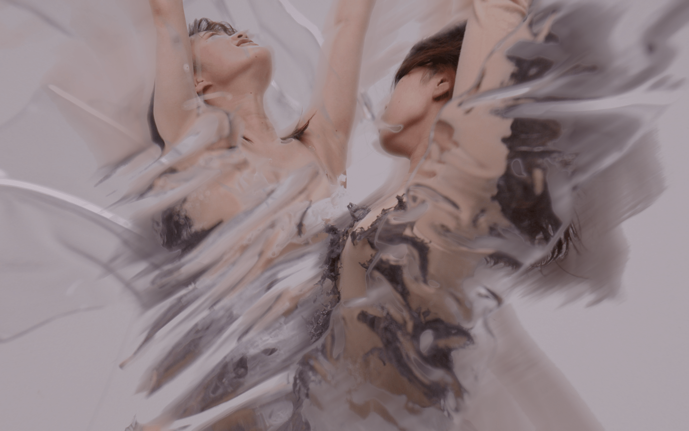

After image
Video ,2022
Sakiko Kanemachi Natsuha Nakamura

成安造形大学卒業制作展〈関連イベント〉ファッションショー SEIAN COLLECTION 2022の3年クリエイター 金町早希子のショー中に流れる映像を制作。
After image
成安造形大学卒業制作展〈関連イベント〉ファッションショー SEIAN COLLECTION 2022の3年クリエイター 金町早希子のショー中に流れる映像を制作。